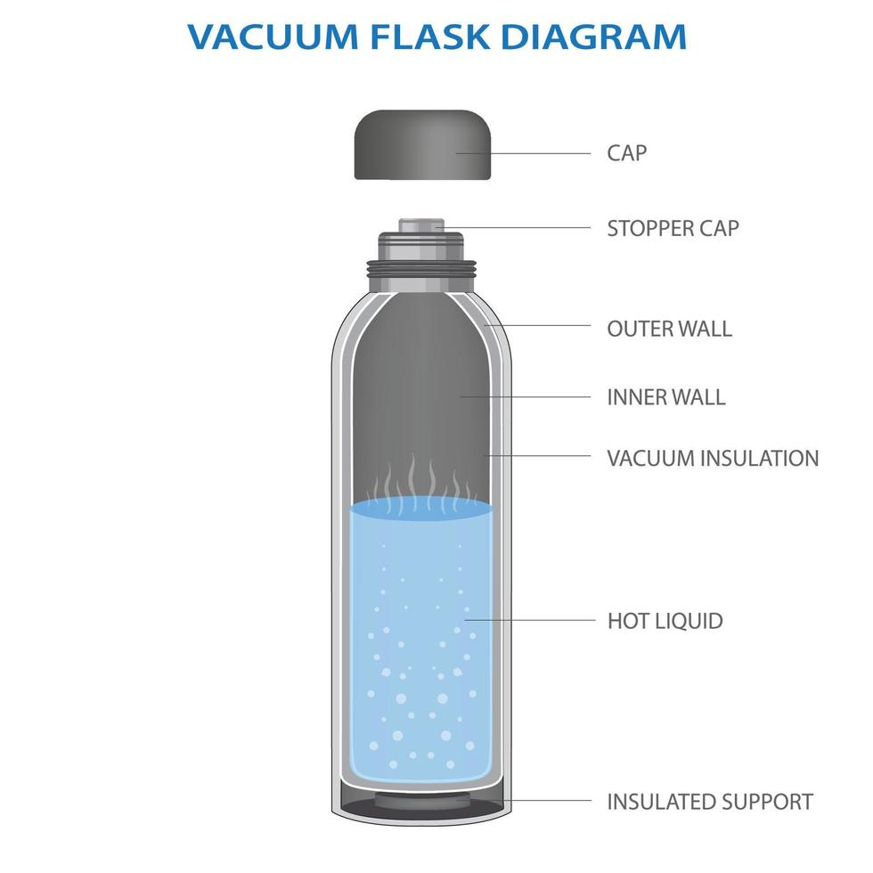

ETAPA 01
Comprender antes de diseñar.
En esta etapa se identificaron las necesidades relacionadas con el uso de recipientes para bebidas calientes, considerando aspectos funcionales, ergonómicos y materiales.
También se analizaron los materiales disponibles para la construcción del prototipo y se revisaron referentes de productos similares.
